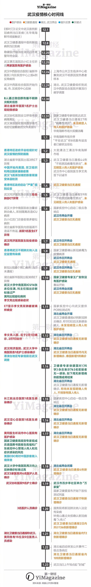

废青的理智与呐喊
肺炎时期的废青发言
 就当是凑个“热点”吧。其实作为废青的我也是第一次写这类文章。
首先需要来武断地下一个结论，免得浪费某些读者的时间。无论疫情结束后他们如何地歌颂自己的“胜利”，其实我们都是失败的，从”辟谣“的那一刻起，我们就是失败的。那么我们到底是怎么样落到这副田地的？
我拒绝学术权威、裙带关系和官僚主义这样的烟雾弹，理客中们跳上跳下喊着各种口号却独独对核心的问题避而不谈——那就是体制的问题。其实上述的几个烟雾弹深究下去，不也是最终回到体制上面去？
那么接下来我们需要澄清体制指的是什么，可能和大部分自由派/左派写作者的指向不同，我想说的是“大共同体本位”的这样一种东西，一个想象的“国家”及它的各类肢体凌驾于所有“人民”的头上，它的所有触手地又直接伸向所有人民，不经过任何缓冲（比方说，宗族）。
那其实在大共同体本位的社会里面，我们都是独自地发出声音，并没有那些代表着多个人共同利益的“法人代表”来为我们去争取权益。我们目光所见的能为我们争取权益的大部分组织，都多多少少被党和政府插了一脚，从而带有一定的官方性，而我们所面对的这个庞然大物也一直在进行着收拾“法人代表”的过程。
这样的局面的一个后果便是，为我们“服务”的官员并不由我们选出（我一个二十好几的人了从来没见过选票长啥样），因为我们并不能组织起足够强大的力量提出这样的要求。官员的权力并不直接来源于人民，所以官员并不对直接对人民负责，他的权力来自于上级，也只对上级负责。
有人在为体制辩解说，这次疫情的爆发是因为官员的无能，并不是体制的无能；但实际上是，他们能做到省长这样的位置上恰恰是因为他们是有能力的，官场外“无知”的人民看来非常不合理的事情，在他们的位置上是出于一种长期执政经验的理性的。让我们来试着猜测一下这样的理性的思考过程：为什么要瞒报？为什么要“辟谣”？如果不经过上级的指示而直接发布疫情的信息，造成的影响很有可能会破坏上方的统筹，这个时候所有的责任都需要发布疫情的官员承担，而如果首先上报上级等待命令则可以巧妙泄力，避免在体制追究责任的时候成为众矢之的，他可以推托说我只是在执行命令而已（“你只是丢了条命，但人家是丢了一份好工作啊！”）。我们可以想象，越重大的事故会有越重大的责任，要来承担责任的人就需要越高的地位，经过每一层官员的理性思考，上报信息——下达命令——执行命令这个过程要经历的时间周期也越长。我们这个国家的政府对这次疫情的反应之慢，甚至于有人合理推测是经过“亲自”决断。
那对于政府人员轻易领到大量N95口罩而奋战在协和医院前线的医生护士们只能自制防具这件事情，也有了符合人类理智的解释——救民当然是先救官，既然官员权力并不来自人民也不用对人民负责。
从极慢的反应周期（近两个月）到医院前线防疫物资的极度短缺，各省份封路割地而治，其他地区民众对武汉（乃至湖北）人民的歧视和区别对待，我们都不难看到想象的民族共同体的虚伪，“举国体制”的失败，这个庞然大物千疮百孔，而它唯一还正常运作的对内功能却是维稳功能：春晚的粉饰太平，李文亮医生的热搜热度被降，封号和禁言变本加厉。在这里，需要指出另一个合理的视角——凌越于我们所有人之上的国家政府并不是我们所以为的那样是一个民政府，而恰恰相反，它是一个军政府，我们的社会是“顺民社会”，而不是一个公民社会。我们不应该以一个正常的现代民主的规范去对它有所期望，试图以温和手段去争取言论和出版自由以及一个公开透明的执政机构都是徒劳的。主人和仆人的比喻不再适用，我们更像是战败的俘虏或被放牧的羊群。就像汉以后历代都打着儒家的口号去施行法家的吏治一样，他们那些名实不符的文宣不过是为了减轻他们的维稳成本。
那我们可以做什么？其实作为一个没有受过人文学科训练的废青来说，我无法预测这次疫情的走向，在我所得的信息里，悲观和乐观的预测都似乎有着一定道理，而我暂时无法把他们判真或判伪。可以预见的是，疫情接下来几个月里面不会结束，而在疫情过后，这个庞然大物如果还没有倒塌的话，它必会加大维稳的力度，消灭更多异议的声音，通过更大力度的汲取来恢复元气，网格化管理可能会在瘟疫过后成为常态。
我本身对于沉迷中国梦的顺民们没有任何期望，而那些试着去改良和变革的人们，我能给的简单方案是保存自己，并尽可能地团结身边的人来组成凝聚足够力量的小共同体，从而去抵御大共同体的汲取或者它倒塌之后的混沌。